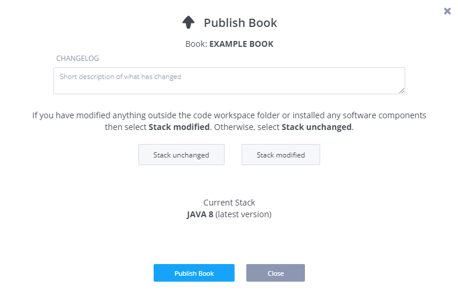
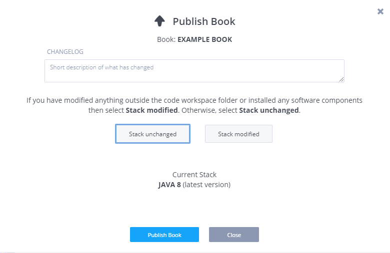
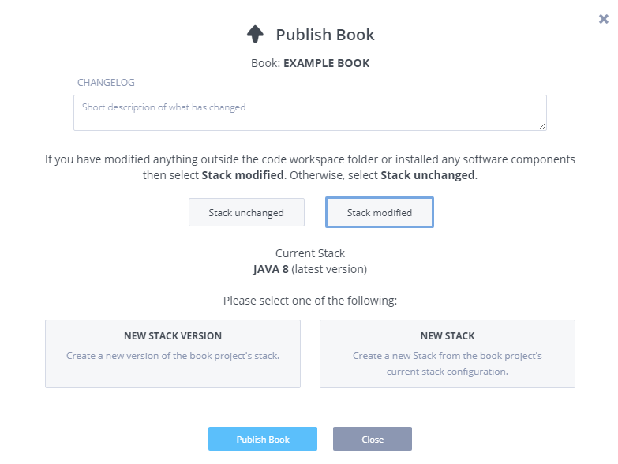
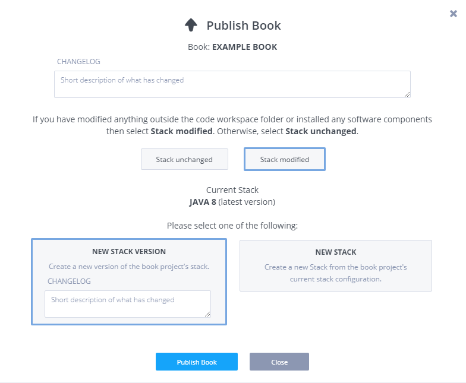
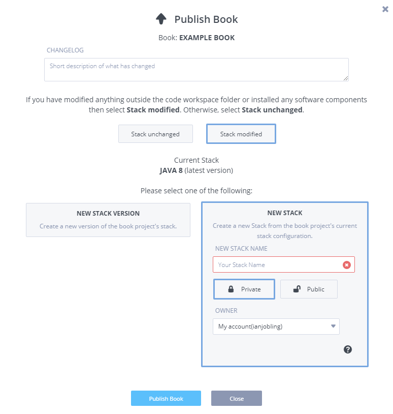
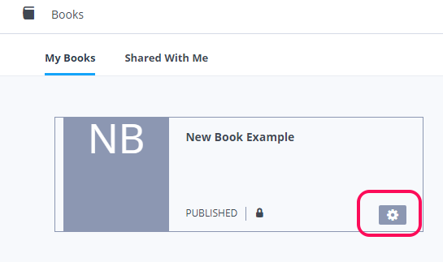
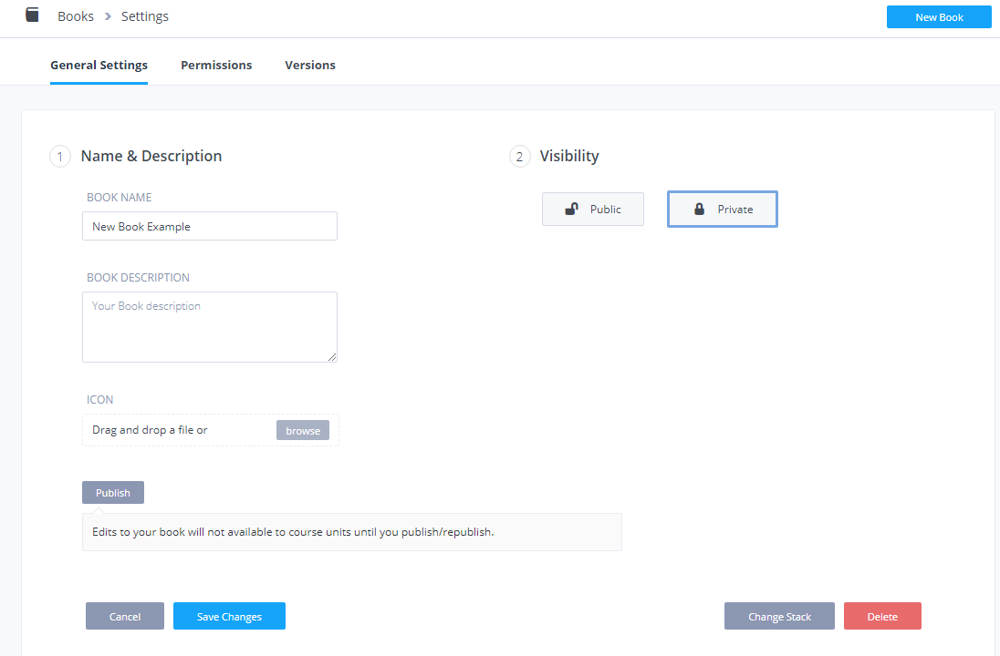
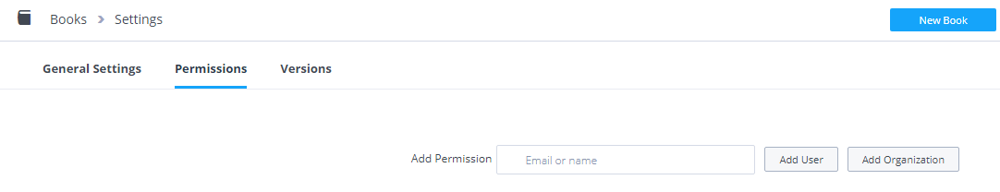
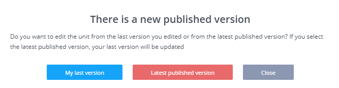

Creating and managing books
Creating a new book
Creating a new book is done from the main books screen. Press the large blue New Book button in the top right of the screen.
You will get the same options for creating a book as for a project, so you can start from scratch or import from a project or a Git repo. You also have control over visibility as with projects and courses.
Editing a book in the IDE
Once the book has been created, you can edit the book in the IDE by clicking on the book.
Editing a book's settings
Modify a book's settings by clicking on the gear icon.
Deleting a book
You can delete a book by clicking on the gear icon and then pressing the Delete button.
Table of contents
The table of contents is edited using the Codio Guide authoring capability. This is the same functionality as available for authoring project and project unit content.
Please click here for full details.
Editing page content
The page content is edited using the Codio Guide authoring capability. This is the same funcitonality as available for authoring project and project unit content.
Please click here for full details.
Publishing and the stack
It is important to understand how and why a book is published.
Until you publish a book, it behaves exactly as a project does. You can open it up and work with it but it cannot be accessed by anyone or mapped to a course until it has been published. After a book is published, you can continue to work on the book without the published version being affected.
Please note the following.
- Publishing creates a snapshot of the book and creates a new version.
- You can continue work on the book without affecting the published version.
- When you map a course unit to a book, it will only pull from a published version.
When you press the Publish button, the following screen will appear.

New stack (no modifications) or only code workspace changes made
If, in your book, you have
- only made changes to the code workspace (the contents of the file tree in the IDE or
/home/codio/workspace) - or you have switched the stack but not made any stack modifications or installed any software since
then you should
- Enter the changelog text, which is a description of the changes made since the last publish.
- Press the Stack Unchanged button.
- Press the Publish Book button.

Stack modified
If you have made any changes to the stack then you should press the Stack modified button. Please be aware that changes to the stack can be made indirectly by applications as well as manual file changes. For example, if you modified a database's contents that is not configured to live in the workspace area then these count as stack changes.

You should now decide whether you want to
- create a new version of the stack used by the book
- create a brand new stack for this book.
Stack modified : New Stack Version
Note that if the stack you are using is not owned by you or you don't have permissions to modify the stack, then you will not be able to select this option. In this case you should create a new stack as explained below under Stack modified: New Stack.
You should enter a description of the stack changes made and then press Publish Book. The new stack version will appear in your stacks listing in the normal way.

Stack modified: New Stack
If you do not have permissions to create a new stack version or you want to create a new stack that this and potentially other books, projects or units should use, then select this option.
This will create a new stack with the permissions you specify. To give access only to others within your organization, select Private and then select the owner organization from the drop down list below.
It will take a few minutes to prepare the stack, so please be patient. Once it is created, it will be visible your stacks listing.

Later book modifications
If, after publishing, you make further changes to our book then you will need to re-publish when you want those changes are available to courses. This will not happen automatically. You will need to update the project unit within your course to pull the published version by pressing Update to latest version.
Course mapping
A book cannot be assigned to a class without mapping it through a course. The advantage of this approach is that you can break your book into smaller chunks that map to lessons or lectures.
You can map the entire book through a single course unit if you are not concerned about detailed unit mappings.
Please refer to Creating book based course units page for details on how to do this.
Permissions and collaboration
By default, a book is only available to you for editing purposes and only you can create courses from a Book.
You can change permissions to allow others
- to edit your book
- to create courses from your book.
To modify the permissions, goto Books from the dashboard. Then select the settings icon.

Private / Public visibility
If the book is set to Private, unless you override the permissions, only you can modify a book contents and create course units from it. Private books cannot be assigned to public courses.
If the book is set to Public, then any Codio user inside or outside your organization can create courses from your book but they will not be able to edit it. The default organization setting restricts the ability to create Public books. To allow this, see Public/Private Settings.

Permissions and collaboration
If you want 2 or more people to collaborate on a book, you need to understand how Codio manages this process.
You need to give explicit permission to other users or to an organization and apply write permissions.
The permissions can be changed by selecting the Permissions tab on the book settings screen. You should first specify which user or organization you want to grant permissions to. You need to know the precise organization or user name and this is case sensitive. We do not support lookups as the potential for incorrect assignment is too great.

You can grant the following permissions.
- Read : this allows the user or organization specified to create course units from your book.
- Write : this allows the user or organization to create course units and to edit your book. If you want to co-author/collaborate with another user on a book, then you an either follow the process described below or you can use git and a remote git repo.
It is important to understand that each user editing a book is not actually editing the same physical project. Codio uses snapshotting of the latest published version. If using the basic collaboration approach described below and not git, then you should remember that only one user should make changes at a time.
If User A and User B want to collaborate, then they each need to inform the other when they are working on the content. If they fail to do so, then one person will have to surrender their changes at some point.
Let's say User A has created a book and authored some content. User A now wants User B to be able to work on the content. User A should first publish the book. Be aware that if User A does not publish the book, then User B will start with an empty book.
When User B accesses the book (from the Shared with me tab on the main books listing), Codio will take a snapshot of the published book and User B can start work on it. In other words, User B is not editing User A's book, User B is now working on a clone of the published book.
User B now makes changes to the book. When done, User B should publish the book and inform User A that the changes are complete and published. At this point, when User A opens the project, a dialog will appear showing that User B has published new changes. User A can now update her own version of the book from this published version. And so the cycle continues.

You can do this with as many users as you like, provided that only one user is making changes at a time.
Creating course units
Books cannot be accessed directly by students. Once your book is published, you need to map parts of it to one or more course units, which can then be assigned to a class.